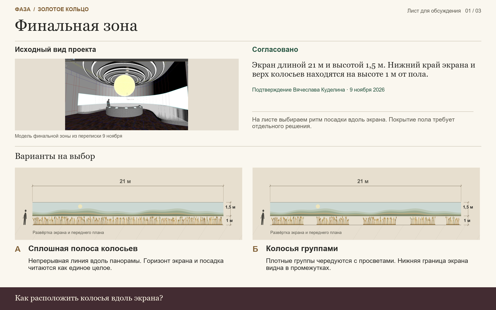
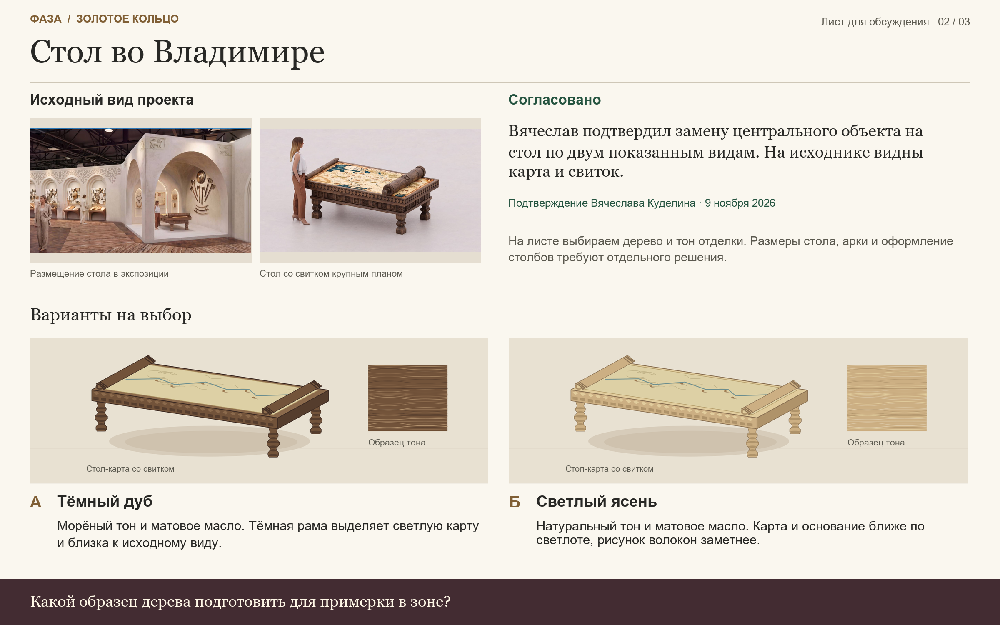
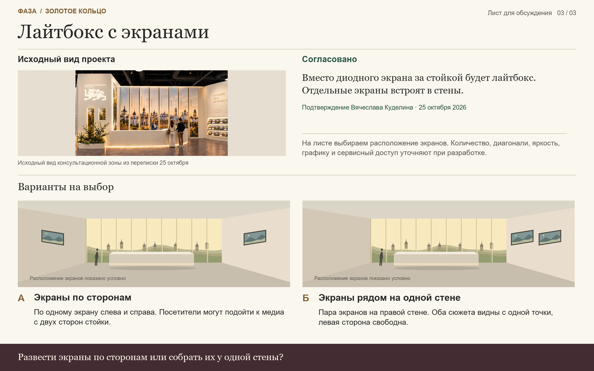

Рассмотреть листФинальная зона
Согласовано 9 ноябряЭкран 21 × 1,5 м, нижний край в метре от пола. Высота колосьев — 1 м.
Как расположить колосья перед экраном?
АСплошная полоса колосьев
БКолосья группами
Выставка в Национальном центре «Россия»
На каждом листе — исходный вид, согласованная часть проекта и два варианта оформления на выбор.

Рассмотреть листСогласовано 9 ноябряЭкран 21 × 1,5 м, нижний край в метре от пола. Высота колосьев — 1 м.
АСплошная полоса колосьев
БКолосья группами

Рассмотреть листСогласовано 9 ноябряВячеслав принял предложенную замену на стол. Его масштаб обсуждали по общему виду зоны и крупному плану стола.
АТёмный дуб
БСветлый ясень

Рассмотреть листСогласовано 25 октябряЗа стойкой разместить лайтбокс. Отдельные экраны встроить в стены консультационной зоны.
АЭкраны по сторонам
БЭкраны рядом на одной стене
После обсуждения выбранный вариант и комментарии можно записать в реестр решений Excel.
Золотое кольцо
Повестка для Вячеслава Куделина, Павла Дорошенко и проектной команды по переписке до 17 ноября.
3 ноября зафиксировали количество. Андрей подготовил рабочий список 7 ноября.
К встрече. Подтвердить список или назвать замены, чтобы Андрей составил задания для каждой зоны.
С 5 ноября на выборе два пролога. Первый открывает проход кинетическими пилонами с мэппингом, второй начинает путешествие со станционного смотрителя.
К встрече. Выбрать один сценарий. Роман и Елена уточнят выдачу билетов и движение посетителей.
Елена запросила согласование образцов 9 ноября. Предложены три объёма работ — сохранить покрытие, заменить часть или весь участок.
К встрече. Выбрать образец и границы замены для визуализации и расчёта.
10 ноября команда обсуждала сопротивление лямки и реакцию экрана.
К встрече. Андрею, Сергею и Сане предлагается проверить действие на простом стенде и определить ответственного за прототип.
12 ноября Вячеслав потребовал включить экран в каждое региональное задание. Для обсуждения предложены видео и интерактивный каталог.
К встрече. С Дорошенко определить содержание и его источники. С Вячеславом решить, кто предоставляет экран, медиасервер и оплату.
К аркам, центральной конструкции и оформлению столбов были замечания 26 октября. Пакет участия области передан 17 ноября.
К встрече. Роману и Елене получить от Дорошенко замечания к конкретным видам или подтверждение выбранного решения.
В пакете от 16 ноября предложено, чтобы Национальный центр отвечал за основную застройку, а область передавала экспонаты и художественные изделия.
К встрече. Согласовать перечень изделий, права на материалы, контакт от области и сроки передачи.
Основа расчёта от 15 октября — 711,5 м² для VARS и 1 073 м² для EURO. Общие работы отнесены к ЕЭС.
К встрече. Получить расчёт VARS, сверить состав у подрядчиков, учесть замены и назначить ответственного за общую смету.
Подрядчики пересчитывают состав после изменений. Для выбора нужен сопоставимый расчёт по зонам.
К встрече. Зафиксировать лимит, обязательные объекты и допустимые сокращения.
Открытие в обоих документах — 21 мая 2027 года. В октябрьской переписке закрытие указано 3 октября, в ноябрьском пакете — 21 октября.
К встрече. Подтвердить дату закрытия перед рассылкой документов регионам.
Золотое кольцо
Откройте презентацию для общего обсуждения или скачайте материалы для работы с вариантами.
Финальная зона, стол во Владимире и лайтбокс с экранами. По два варианта на каждом листе.
Скачать Word ↓Согласования и открытые вопросы. Впишите выбор, ответственного и срок по итогам встречи.
Скачать Excel ↓
12 слайдов о маршруте посетителя, региональных зонах и решениях для следующего этапа.
Начать показ слайдовВ архиве — визуализации к обсуждению лайтбокса от 25 октября, финальной зоны и стола от 9 ноября, а также региональный пакет, переданный 17 ноября.
Открыть архив на Яндекс Диске ↗